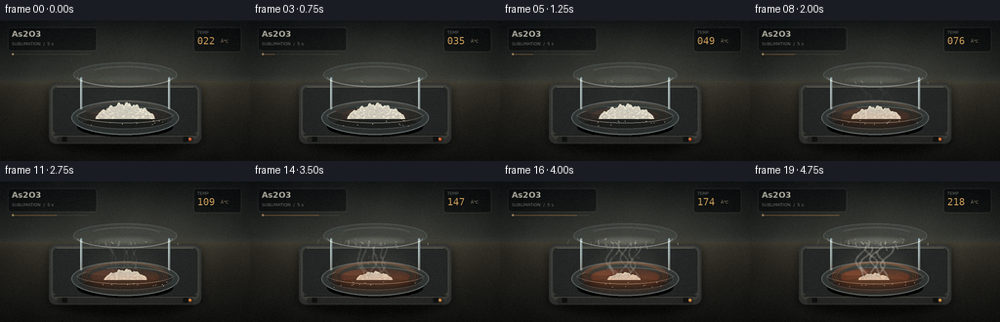
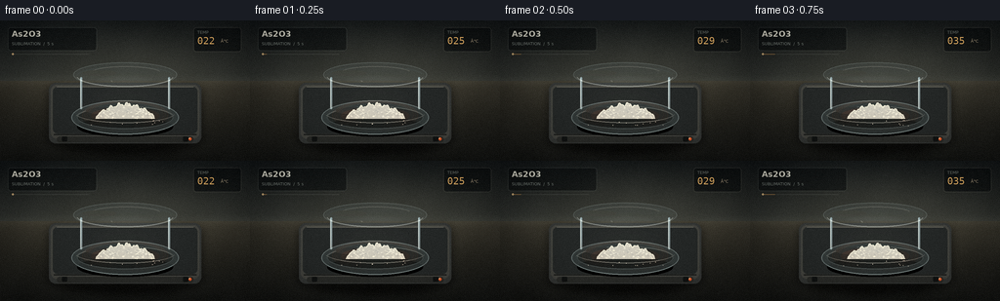
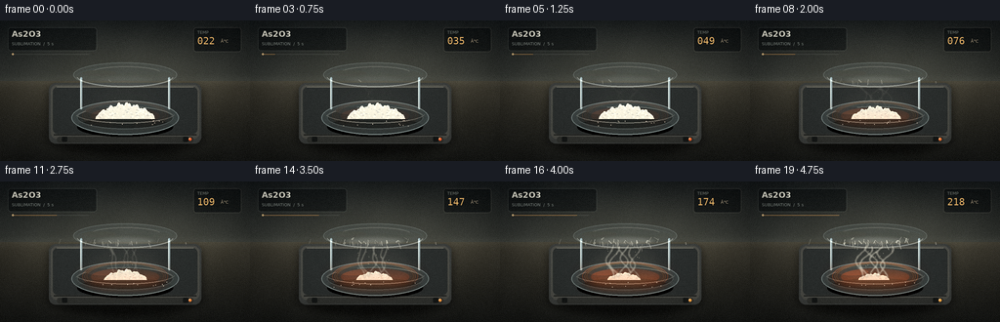
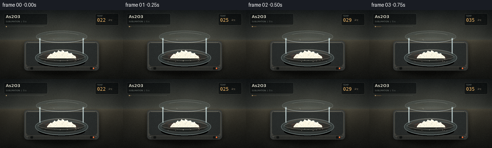

CODING AGENTS AS PIXEL WORLD MODELS
traex/DeepSeek-V4.1-Flash · phygen_120
点击播放 · 原生 RGB 像素
逐轮保存的候选
回放视频、检查图与代码变化。
每份候选均可单独播放。实际图片检查记录在下方工具轨迹中。
候选 01播放与检查图
点击播放 · 原生 RGB 像素


展开代码变化
--- 上一保存版本
+++ 本次保存版本
@@ -0,0 +1,372 @@
+from pathlib import Path
+import math
+
+import numpy as np
+from PIL import Image, ImageDraw, ImageFilter, ImageFont
+
+import artifact_io
+
+
+WIDTH, HEIGHT, FRAMES, FPS = 256, 144, 20, 4
+SS = 3
+W, H = WIDTH * SS, HEIGHT * SS
+ROOT = Path(__file__).resolve().parent
+FONT_SANS = "/usr/share/fonts/truetype/dejavu/DejaVuSans.ttf"
+FONT_BOLD = "/usr/share/fonts/truetype/dejavu/DejaVuSans-Bold.ttf"
+FONT_MONO = "/usr/share/fonts/truetype/dejavu/DejaVuSansMono.ttf"
+
+
+def s(value):
+ return int(round(value * SS))
+
+
+def box(values):
+ return tuple(s(v) for v in values)
+
+
+def point(x, y):
+ return s(x), s(y)
+
+
+def lerp(a, b, amount):
+ return tuple(int(round(a[i] + (b[i] - a[i]) * amount)) for i in range(3))
+
+
+def ease(value):
+ value = max(0.0, min(1.0, value))
+ return value * value * (3.0 - 2.0 * value)
+
+
+def rounded_mask(size, rectangle, radius):
+ mask = Image.new("L", size, 0)
+ ImageDraw.Draw(mask).rounded_rectangle(box(rectangle), radius=s(radius), fill=255)
+ return mask
+
+
+def composite_mask(base, layer, mask):
+ base.paste(layer, (0, 0), mask)
+
+
+def make_background():
+ yy, xx = np.mgrid[0:H, 0:W]
+ xn = xx / (W - 1)
+ yn = yy / (H - 1)
+
+ image = np.zeros((H, W, 3), dtype=np.float32)
+ wall_top = np.array([19, 23, 25], dtype=np.float32)
+ wall_bottom = np.array([42, 45, 43], dtype=np.float32)
+ bench_top = np.array([49, 47, 40], dtype=np.float32)
+ bench_bottom = np.array([24, 25, 23], dtype=np.float32)
+
+ horizon = 0.43
+ wall_mix = np.clip(yn / horizon, 0.0, 1.0)[..., None]
+ wall = wall_top + (wall_bottom - wall_top) * wall_mix
+ bench_mix = np.clip((yn - horizon) / (1.0 - horizon), 0.0, 1.0)[..., None]
+ bench = bench_top + (bench_bottom - bench_top) * bench_mix
+ image[:] = np.where((yn < horizon)[..., None], wall, bench)
+
+ light_x, light_y = 0.54, 0.35
+ radius = np.sqrt(((xn - light_x) * 0.92) ** 2 + ((yn - light_y) * 1.35) ** 2)
+ key = np.exp(-(radius / 0.48) ** 2)
+ image += key[..., None] * np.array([22, 20, 15], dtype=np.float32)
+
+ horizon_glow = np.exp(-((yn - horizon) / 0.035) ** 2)
+ image += horizon_glow[..., None] * np.array([7, 7, 6], dtype=np.float32)
+
+ texture = (
+ np.sin(xx * 0.045 + yy * 0.018) * 0.8
+ + np.sin(xx * 0.011 - yy * 0.031) * 1.1
+ )
+ image += texture[..., None]
+ return Image.fromarray(np.clip(image, 0, 255).astype(np.uint8), "RGB")
+
+
+def add_plate(canvas, heat):
+ size = canvas.size
+ shadow = Image.new("RGBA", size, (0, 0, 0, 0))
+ shadow_draw = ImageDraw.Draw(shadow)
+ shadow_draw.ellipse(box((47, 103, 209, 137)), fill=(0, 0, 0, 155))
+ shadow_draw.rounded_rectangle(box((49, 67, 207, 128)), radius=s(8), fill=(0, 0, 0, 120))
+ shadow = shadow.filter(ImageFilter.GaussianBlur(s(4)))
+ canvas.alpha_composite(shadow)
+
+ body = Image.new("RGBA", size, (0, 0, 0, 0))
+ draw = ImageDraw.Draw(body)
+ draw.rounded_rectangle(box((50, 64, 206, 126)), radius=s(7), fill=(55, 57, 55, 255))
+ draw.rounded_rectangle(box((52, 66, 204, 121)), radius=s(6), fill=(70, 70, 65, 255))
+ draw.rounded_rectangle(box((54, 68, 202, 116)), radius=s(5), fill=(40, 43, 42, 255))
+ draw.line(box((58, 68, 198, 68)), fill=(117, 116, 106, 185), width=s(1))
+ draw.line(box((55, 117, 201, 117)), fill=(23, 25, 24, 220), width=s(1))
+ draw.rounded_rectangle(box((58, 119, 198, 125)), radius=s(3), fill=(45, 46, 43, 255))
+
+ center_x, center_y = s(128), s(96)
+ glow = Image.new("RGBA", size, (0, 0, 0, 0))
+ glow_draw = ImageDraw.Draw(glow)
+ for index in range(3):
+ inset = index * 2.2
+ strength = int((20 + 78 * heat) * (1.0 - index * 0.19))
+ glow_draw.ellipse(
+ box((84 + inset, 82 + inset * 0.38, 172 - inset, 112 - inset * 0.38)),
+ outline=(255, 104 + index * 14, 38, strength),
+ width=s(1),
+ )
+ pulse = 0.88 + 0.12 * math.sin(heat * 8.0)
+ core_alpha = int((25 + 74 * heat) * pulse)
+ glow_draw.ellipse(box((93, 89, 163, 106)), fill=(206, 69, 24, core_alpha))
+ body.alpha_composite(glow)
+
+ draw = ImageDraw.Draw(body)
+ for x in (66, 190):
+ draw.rounded_rectangle(box((x - 2.5, 119, x + 2.5, 124)), radius=s(1), fill=(21, 23, 22, 255))
+ led_color = (255, int(92 + 72 * heat), int(40 + 24 * heat), 255)
+ draw.ellipse(box((193, 120, 196, 123)), fill=led_color)
+ draw.ellipse(box((193.4, 120.4, 194.4, 121.4)), fill=(255, 225, 174, 255))
+
+ canvas.alpha_composite(body)
+
+
+def add_supports_and_cover(canvas, progress):
+ draw = ImageDraw.Draw(canvas, "RGBA")
+ for x in (83, 173):
+ draw.rounded_rectangle(box((x - 1.0, 58, x + 1.0, 91)), radius=s(1), fill=(135, 151, 153, 38))
+ draw.line(box((x - 0.6, 59, x - 0.6, 89)), fill=(216, 225, 218, 45), width=s(0.5))
+
+ cover = Image.new("RGBA", canvas.size, (0, 0, 0, 0))
+ cover_draw = ImageDraw.Draw(cover)
+ cover_draw.ellipse(box((75, 43, 181, 68)), fill=(157, 185, 190, 18), outline=(200, 219, 217, 64), width=s(0.8))
+ cover_draw.arc(box((78, 45, 178, 68)), 10, 171, fill=(235, 242, 234, 105), width=s(0.9))
+ cover_draw.arc(box((79, 47, 177, 66)), 188, 350, fill=(121, 151, 158, 48), width=s(0.7))
+ cover_draw.arc(box((91, 47, 166, 62)), 199, 338, fill=(250, 250, 238, 55), width=s(0.7))
+ cover_draw.ellipse(box((84, 51, 119, 57)), fill=(238, 246, 237, 13))
+ canvas.alpha_composite(cover)
+
+ mist = Image.new("RGBA", canvas.size, (0, 0, 0, 0))
+ mist_draw = ImageDraw.Draw(mist)
+ mist_alpha = int(10 + 38 * ease(progress))
+ mist_draw.ellipse(box((96, 56, 160, 66)), fill=(232, 235, 224, mist_alpha))
+ mist = mist.filter(ImageFilter.GaussianBlur(s(2.0)))
+ canvas.alpha_composite(mist)
+
+ crystal_layer = Image.new("RGBA", canvas.size, (0, 0, 0, 0))
+ crystal_draw = ImageDraw.Draw(crystal_layer)
+ rng = np.random.default_rng(1203)
+ count = int(round(3 + 35 * ease(max(0.0, (progress - 0.18) / 0.82))))
+ for index in range(count):
+ angle = rng.uniform(math.pi * 0.08, math.pi * 0.92)
+ start_x = 128 + rng.normal(0, 20.0)
+ start_y = 61.5 + rng.normal(0, 2.1)
+ length = rng.uniform(2.0, 7.0) * (0.65 + 0.45 * progress)
+ end_x = start_x + math.cos(angle) * length * rng.uniform(0.25, 0.65)
+ end_y = start_y + math.sin(angle) * length
+ alpha = int(70 + 105 * progress)
+ width = 1 if index % 3 else 2
+ crystal_draw.line(
+ (s(start_x), s(start_y), s(end_x), s(end_y)),
+ fill=(242, 242, 226, alpha),
+ width=s(width * 0.55),
+ )
+ if index % 4 == 0:
+ crystal_draw.line(
+ (s((start_x + end_x) / 2), s((start_y + end_y) / 2), s(end_x + 1.4), s(end_y - 1.0)),
+ fill=(228, 231, 218, alpha // 2),
+ width=s(0.45),
+ )
+ crystal_layer = crystal_layer.filter(ImageFilter.GaussianBlur(s(0.18)))
+ canvas.alpha_composite(crystal_layer)
+
+
+def add_dish_and_powder(canvas, progress):
+ draw = ImageDraw.Draw(canvas, "RGBA")
+ draw.ellipse(box((79, 99, 177, 119)), fill=(0, 0, 0, 88))
+
+ glass = Image.new("RGBA", canvas.size, (0, 0, 0, 0))
+ gd = ImageDraw.Draw(glass)
+ gd.ellipse(box((73, 82, 183, 117)), fill=(133, 157, 158, 37), outline=(190, 211, 207, 105), width=s(1.0))
+ gd.ellipse(box((79, 88, 177, 111)), fill=(35, 43, 43, 112), outline=(161, 187, 187, 65), width=s(0.8))
+ gd.arc(box((77, 88, 179, 112)), 191, 343, fill=(222, 232, 221, 83), width=s(0.8))
+ gd.arc(box((77, 85, 179, 105)), 8, 166, fill=(241, 246, 234, 75), width=s(0.6))
+ gd.ellipse(box((88, 89, 121, 96)), fill=(225, 236, 231, 12))
+ canvas.alpha_composite(glass)
+
+ heat = ease(max(0.0, (progress - 0.16) / 0.84))
+ mass = max(0.13, 1.0 - 0.87 * ease(progress ** 1.08))
+ half_width = 30.0 * (0.44 + 0.56 * mass)
+ height = 15.0 * (0.30 + 0.70 * mass)
+ baseline = 100.5
+ center_x = 128.0 + 1.3 * math.sin(progress * 5.0)
+
+ rng = np.random.default_rng(2911)
+ phase = rng.uniform(0, math.tau, 18)
+ xs = np.linspace(-half_width, half_width, 75)
+ top = baseline - height * np.power(np.clip(1.0 - np.abs(xs / half_width) ** 1.35, 0, 1), 0.56)
+ irregularity = 1.0 + 0.11 * np.sin(xs * 0.72 + phase[0]) + 0.06 * np.sin(xs * 1.63 + phase[1])
+ top = baseline - (baseline - top) * irregularity
+ top = np.maximum(top, baseline - height * 1.17)
+
+ polygon = [(s(center_x + xs[0]), s(baseline))]
+ polygon.extend((s(center_x + x), s(y)) for x, y in zip(xs, top))
+ polygon.append((s(center_x + xs[-1]), s(baseline)))
+ draw.polygon(polygon, fill=(208, 204, 190, 255))
+ draw.line(
+ [(s(center_x + x), s(y)) for x, y in zip(xs, top)],
+ fill=(243, 239, 218, 225),
+ width=s(0.85),
+ )
+
+ # Faceted grains keep the powder crystalline rather than looking like a smooth dune.
+ grain_count = int(34 + 95 * mass)
+ for _ in range(grain_count):
+ u = rng.uniform(-1, 1)
+ envelope = max(0.0, 1.0 - abs(u) ** 1.35) ** 0.56
+ gy = baseline - rng.uniform(0.0, height * envelope * 0.92)
+ gx = center_x + u * half_width * 0.94
+ radius = rng.uniform(0.28, 1.05) * (0.65 + 0.35 * mass)
+ tone = rng.integers(0, 4)
+ color = [
+ (246, 242, 224, 205),
+ (225, 220, 203, 180),
+ (191, 190, 181, 135),
+ (255, 249, 225, 165),
+ ][int(tone)]
+ gd = ImageDraw.Draw(canvas, "RGBA")
+ gd.polygon(
+ [
+ (s(gx), s(gy - radius)),
+ (s(gx + radius * 1.5), s(gy)),
+ (s(gx), s(gy + radius * 0.55)),
+ (s(gx - radius * 1.1), s(gy - radius * 0.1)),
+ ],
+ fill=color,
+ )
+
+ if heat > 0.15:
+ warm = Image.new("RGBA", canvas.size, (0, 0, 0, 0))
+ warm_draw = ImageDraw.Draw(warm)
+ warm_draw.ellipse(box((87, 91, 169, 110)), fill=(255, 92, 24, int(17 + 25 * heat)))
+ warm = warm.filter(ImageFilter.GaussianBlur(s(5)))
+ canvas.alpha_composite(warm)
+
+ # A few escaped grains make the reduction in the mound readable.
+ dust = ImageDraw.Draw(canvas, "RGBA")
+ for index in range(10):
+ dx = center_x + rng.uniform(-43, 43)
+ dy = baseline + rng.uniform(1.5, 7.5)
+ alpha = int(65 + 75 * (1.0 - mass))
+ dust.ellipse((s(dx), s(dy), s(dx + 0.55), s(dy + 0.55)), fill=(224, 219, 202, alpha))
+
+ return baseline, height, mass, center_x, heat
+
+
+def add_vapor(canvas, progress, heat, baseline, mound_height, center_x):
+ vapor = Image.new("RGBA", canvas.size, (0, 0, 0, 0))
+ draw = ImageDraw.Draw(vapor)
+ rng = np.random.default_rng(8801)
+ wisp_count = 6
+ for index in range(wisp_count):
+ local = np.clip((progress - 0.08 - index * 0.016) / 0.84, 0.0, 1.0)
+ if local <= 0:
+ continue
+ base_x = center_x + (index - (wisp_count - 1) / 2) * 5.4 + rng.normal(0, 1.4)
+ start_y = baseline - mound_height * rng.uniform(0.2, 0.85)
+ end_y = 65.0 + rng.uniform(-1.5, 3.0)
+ amplitude = rng.uniform(2.0, 6.5)
+ phase = rng.uniform(0, math.tau)
+ points = []
+ for step in range(24):
+ q = step / 23.0
+ y = start_y + (end_y - start_y) * q
+ x = base_x + amplitude * math.sin(q * 4.8 + phase + progress * 5.5) * (0.2 + 0.8 * q)
+ x += 2.5 * math.sin(q * 8.0 - progress * 3.0 + phase)
+ points.append((s(x), s(y)))
+ alpha = int((20 + 94 * heat) * (0.35 + 0.65 * local))
+ width = s(0.72 + 1.15 * local)
+ draw.line(points, fill=(238, 237, 224, alpha), width=width, joint="curve")
+ if index % 2 == 0:
+ draw.line(points[6:], fill=(255, 246, 220, max(12, alpha // 3)), width=s(0.45), joint="curve")
+ vapor = vapor.filter(ImageFilter.GaussianBlur(s(0.72)))
+ canvas.alpha_composite(vapor)
+
+ motes = Image.new("RGBA", canvas.size, (0, 0, 0, 0))
+ mote_draw = ImageDraw.Draw(motes)
+ count = int(3 + 13 * heat)
+ for index in range(count):
+ seed = rng.uniform(0, 1)
+ travel = (progress * (0.65 + 0.3 * seed) + seed) % 1.0
+ y = baseline - 5 - travel * (baseline - 68)
+ x = center_x + math.sin(seed * 34 + progress * 7) * (5 + 12 * travel) + (seed - 0.5) * 12
+ alpha = int((22 + 70 * heat) * math.sin(math.pi * travel))
+ mote_draw.ellipse((s(x), s(y), s(x + 0.55), s(y + 0.55)), fill=(246, 238, 209, max(0, alpha)))
+ canvas.alpha_composite(motes)
+
+
+def add_glow_and_hud(canvas, progress, temperature):
+ glow = Image.new("RGBA", canvas.size, (0, 0, 0, 0))
+ gd = ImageDraw.Draw(glow)
+ heat = ease(max(0.0, (progress - 0.12) / 0.88))
+ gd.ellipse(box((79, 82, 177, 113)), fill=(255, 84, 20, int(15 + 40 * heat)))
+ gd.ellipse(box((110, 92, 146, 107)), fill=(255, 138, 45, int(8 + 27 * heat)))
+ gd.ellipse(box((90, 64, 166, 104)), fill=(235, 220, 183, int(4 + 12 * heat)))
+ glow = glow.filter(ImageFilter.GaussianBlur(s(7)))
+ canvas.alpha_composite(glow)
+
+ font_title = ImageFont.truetype(FONT_BOLD, s(8.2))
+ font_small = ImageFont.truetype(FONT_SANS, s(4.2))
+ font_temp = ImageFont.truetype(FONT_MONO, s(10.0))
+ font_unit = ImageFont.truetype(FONT_SANS, s(4.4))
+ hud = Image.new("RGBA", canvas.size, (0, 0, 0, 0))
+ draw = ImageDraw.Draw(hud)
+
+ draw.rounded_rectangle(box((8, 7, 99, 31)), radius=s(3), fill=(9, 12, 13, 124), outline=(186, 198, 191, 28), width=s(0.5))
+ draw.text(point(12, 8.7), "As2O3", font=font_title, fill=(239, 237, 220, 238))
+ draw.text(point(12, 21.0), "SUBLIMATION / 5 s", font=font_small, fill=(170, 181, 173, 196))
+
+ draw.rounded_rectangle(box((198, 7, 247, 32)), radius=s(3), fill=(9, 12, 13, 140), outline=(194, 186, 166, 34), width=s(0.5))
+ draw.text(point(202, 9.2), "TEMP", font=font_small, fill=(161, 169, 160, 188))
+ temp_text = f"{int(round(temperature)):03d}"
+ draw.text(point(202, 15.1), temp_text, font=font_temp, fill=(251, 193, 112, 246))
+ draw.text(point(226, 18.4), "°C", font=font_unit, fill=(239, 214, 175, 222))
+
+ # A compact progress rail makes the five-second time compression explicit.
+ draw.line(box((13, 34.4, 91, 34.4)), fill=(191, 196, 184, 34), width=s(0.55))
+ draw.line(box((13, 34.4, 13 + 78 * progress, 34.4)), fill=(235, 167, 91, 140), width=s(0.55))
+ draw.ellipse(box((11.9, 33.3, 14.1, 35.5)), fill=(246, 204, 142, 190))
+ canvas.alpha_composite(hud)
+
+
+def render_frame(frame_index):
+ progress = frame_index / (FRAMES - 1)
+ temperature = 22.0 + 196.0 * (progress ** 1.48)
+
+ background = make_background()
+ canvas = background.convert("RGBA")
+ heat = ease(max(0.0, (progress - 0.1) / 0.9))
+ add_plate(canvas, heat)
+ add_supports_and_cover(canvas, progress)
+ baseline, mound_height, mass, center_x, powder_heat = add_dish_and_powder(canvas, progress)
+ add_vapor(canvas, progress, powder_heat, baseline, mound_height, center_x)
+ add_glow_and_hud(canvas, progress, temperature)
+
+ image = canvas.convert("RGB").resize((WIDTH, HEIGHT), Image.Resampling.LANCZOS)
+ arr = np.asarray(image, dtype=np.float32)
+
+ yy, xx = np.mgrid[0:HEIGHT, 0:WIDTH]
+ nx = (xx - WIDTH * 0.5) / (WIDTH * 0.5)
+ ny = (yy - HEIGHT * 0.47) / (HEIGHT * 0.53)
+ vignette = np.clip(1.0 - 0.19 * (nx * nx + ny * ny), 0.72, 1.0)
+ arr *= vignette[..., None]
+
+ rng = np.random.default_rng(4100 + frame_index)
+ grain = rng.normal(0, 1.65, (HEIGHT, WIDTH, 1))
+ arr += grain
+ arr = (arr - 128.0) * 1.025 + 128.0
+ return np.clip(arr, 0, 255).astype(np.uint8)
+
+
+def main():
+ frames = np.stack([render_frame(index) for index in range(FRAMES)])
+ artifact_io.save(frames, ROOT)
+ print(f"wrote {FRAMES} frames to {ROOT}")
+
+
+if __name__ == "__main__":
+ main()
候选 02播放与检查图
点击播放 · 原生 RGB 像素


展开代码变化
--- 上一保存版本
+++ 本次保存版本
@@ -78,7 +78,7 @@
+ np.sin(xx * 0.011 - yy * 0.031) * 1.1
)
image += texture[..., None]
- return Image.fromarray(np.clip(image, 0, 255).astype(np.uint8), "RGB")
+ return Image.fromarray(np.clip(image, 0, 255).astype(np.uint8))
def add_plate(canvas, heat):
@@ -150,25 +150,25 @@
crystal_layer = Image.new("RGBA", canvas.size, (0, 0, 0, 0))
crystal_draw = ImageDraw.Draw(crystal_layer)
rng = np.random.default_rng(1203)
- count = int(round(3 + 35 * ease(max(0.0, (progress - 0.18) / 0.82))))
+ count = int(round(2 + 50 * ease(max(0.0, (progress - 0.16) / 0.84))))
for index in range(count):
angle = rng.uniform(math.pi * 0.08, math.pi * 0.92)
- start_x = 128 + rng.normal(0, 20.0)
- start_y = 61.5 + rng.normal(0, 2.1)
- length = rng.uniform(2.0, 7.0) * (0.65 + 0.45 * progress)
+ start_x = 128 + rng.normal(0, 23.0)
+ start_y = 60.7 + rng.normal(0, 1.9)
+ length = rng.uniform(2.4, 8.0) * (0.72 + 0.38 * progress)
end_x = start_x + math.cos(angle) * length * rng.uniform(0.25, 0.65)
end_y = start_y + math.sin(angle) * length
- alpha = int(70 + 105 * progress)
+ alpha = int(55 + 125 * progress)
width = 1 if index % 3 else 2
crystal_draw.line(
(s(start_x), s(start_y), s(end_x), s(end_y)),
- fill=(242, 242, 226, alpha),
+ fill=(251, 249, 229, alpha),
width=s(width * 0.55),
)
if index % 4 == 0:
crystal_draw.line(
(s((start_x + end_x) / 2), s((start_y + end_y) / 2), s(end_x + 1.4), s(end_y - 1.0)),
- fill=(228, 231, 218, alpha // 2),
+ fill=(237, 240, 220, alpha // 2),
width=s(0.45),
)
crystal_layer = crystal_layer.filter(ImageFilter.GaussianBlur(s(0.18)))
@@ -206,10 +206,10 @@
polygon = [(s(center_x + xs[0]), s(baseline))]
polygon.extend((s(center_x + x), s(y)) for x, y in zip(xs, top))
polygon.append((s(center_x + xs[-1]), s(baseline)))
- draw.polygon(polygon, fill=(208, 204, 190, 255))
+ draw.polygon(polygon, fill=(222, 218, 201, 255))
draw.line(
[(s(center_x + x), s(y)) for x, y in zip(xs, top)],
- fill=(243, 239, 218, 225),
+ fill=(252, 247, 224, 236),
width=s(0.85),
)
@@ -242,7 +242,7 @@
if heat > 0.15:
warm = Image.new("RGBA", canvas.size, (0, 0, 0, 0))
warm_draw = ImageDraw.Draw(warm)
- warm_draw.ellipse(box((87, 91, 169, 110)), fill=(255, 92, 24, int(17 + 25 * heat)))
+ warm_draw.ellipse(box((87, 91, 169, 110)), fill=(255, 92, 24, int(14 + 31 * heat)))
warm = warm.filter(ImageFilter.GaussianBlur(s(5)))
canvas.alpha_composite(warm)
@@ -278,9 +278,9 @@
x = base_x + amplitude * math.sin(q * 4.8 + phase + progress * 5.5) * (0.2 + 0.8 * q)
x += 2.5 * math.sin(q * 8.0 - progress * 3.0 + phase)
points.append((s(x), s(y)))
- alpha = int((20 + 94 * heat) * (0.35 + 0.65 * local))
- width = s(0.72 + 1.15 * local)
- draw.line(points, fill=(238, 237, 224, alpha), width=width, joint="curve")
+ alpha = int((24 + 108 * heat) * (0.35 + 0.65 * local))
+ width = s(0.78 + 1.28 * local)
+ draw.line(points, fill=(247, 243, 223, alpha), width=width, joint="curve")
if index % 2 == 0:
draw.line(points[6:], fill=(255, 246, 220, max(12, alpha // 3)), width=s(0.45), joint="curve")
vapor = vapor.filter(ImageFilter.GaussianBlur(s(0.72)))
@@ -294,7 +294,7 @@
travel = (progress * (0.65 + 0.3 * seed) + seed) % 1.0
y = baseline - 5 - travel * (baseline - 68)
x = center_x + math.sin(seed * 34 + progress * 7) * (5 + 12 * travel) + (seed - 0.5) * 12
- alpha = int((22 + 70 * heat) * math.sin(math.pi * travel))
+ alpha = int((26 + 82 * heat) * math.sin(math.pi * travel))
mote_draw.ellipse((s(x), s(y), s(x + 0.55), s(y + 0.55)), fill=(246, 238, 209, max(0, alpha)))
canvas.alpha_composite(motes)
@@ -354,11 +354,12 @@
ny = (yy - HEIGHT * 0.47) / (HEIGHT * 0.53)
vignette = np.clip(1.0 - 0.19 * (nx * nx + ny * ny), 0.72, 1.0)
arr *= vignette[..., None]
+ arr = (arr - 5.0) * 1.13 + 7.0
rng = np.random.default_rng(4100 + frame_index)
grain = rng.normal(0, 1.65, (HEIGHT, WIDTH, 1))
arr += grain
- arr = (arr - 128.0) * 1.025 + 128.0
+ arr = (arr - 128.0) * 1.035 + 128.0
return np.clip(arr, 0, 255).astype(np.uint8)
可观测工具轨迹
实际执行的命令与返回图片。
命令 1exit 0
/bin/bash -c "pwd && rg --files -g 'prompt.txt' -g 'GENERATION_RULES.md' -g 'task_spec.json' -g '"'!node_modules'"' -g '"'!vendor'"'"
命令 2exit 0
/bin/bash -c 'ls -la'
命令 3exit 1
/bin/bash -c 'command -v ffmpeg; command -v python3; command -v blender; command -v node; command -v convert; command -v magick'
命令 4exit 0
/bin/bash -c 'cat prompt.txt'
命令 5exit 0
/bin/bash -c 'cat GENERATION_RULES.md'
命令 6exit 0
/bin/bash -c 'cat task_spec.json'
命令 7exit 0
/bin/bash -c "sed -n '1,240p' artifact_io.py"
命令 8exit 0
/bin/bash -c 'fc-list | head -20'
命令 9exit 0
/bin/bash -c 'python3 generate.py'
命令 10exit 0
/bin/bash -c "python3 - <<'PY'
from PIL import Image
import numpy as np
im=Image.open('inspection.png').convert('RGB')
a=np.asarray(im)
print('inspection', im.size, 'mean', a.mean(axis=(0,1)).round(1), 'std', a.std().round(1))
for i in [0,4,9,14,19]:
f=np.asarray(Image.open(f'frames/{i:02d}.png').convert('RGB'))
print(i, 'mean', f.mean(axis=(0,1)).round(1), 'std', f.std().round(1), 'dark%', (f.mean(2)<20).mean().round(3), 'bright%', (f.mean(2)>210).mean().round(3))
PY"命令 11exit 0
/bin/bash -c "python3 - <<'PY'
from PIL import Image
im=Image.open('frames/00.png')
im.resize((1024,576), Image.Resampling.NEAREST).save('.tmp/frame00_big.png')
im=Image.open('frames/19.png')
im.resize((1024,576), Image.Resampling.NEAREST).save('.tmp/frame19_big.png')
PY"命令 12exit 0
/bin/bash -c "python3 - <<'PY'
from PIL import Image, ImageDraw, ImageFont
import numpy as np
im=Image.open('inspection.png').convert('RGB')
# find largest horizontal runs by row/col, useful for composition placement
for name, fn in [('rows', lambda x:x.sum(axis=1)), ('cols', lambda x:x.sum(axis=0))]:
a=np.asarray(im.convert('L'), dtype=float)
p=fn(a)
idx=np.argsort(p)[-8:][::-1]
print(name, idx.tolist(), np.round(p[idx]).astype(int).tolist())
# color quantiles to confirm contrast
a=np.asarray(im).reshape(-1,3)
for q in [1,5,25,50,75,95,99]: print(q, np.percentile(a,q,axis=0).astype(int).tolist())
PY"命令 13exit 0
/bin/bash -c "python3 - <<'PY'
from PIL import Image
import numpy as np
for i in [0,5,10,15,19]:
a=np.asarray(Image.open(f'frames/{i:02d}.png').convert('RGB'))
# central apparatus region, excluding dark plate
crop=a[40:115,65:195]
print(i, 'crop mean', crop.mean(axis=(0,1)).round(1), 'max', crop.max(axis=(0,1)), 'white px', ((crop.mean(2)>150)).sum())
PY"命令 14exit 0
/bin/bash -c "python3 - <<'PY'
from PIL import Image, ImageOps
import numpy as np
chars=' .,:;irsXA253hMHGS#9B&@'
for fi in [0,9,19]:
im=Image.open(f'frames/{fi:02d}.png').convert('L').resize((80,30), Image.Resampling.BOX)
a=np.asarray(im).astype(float)
a=np.clip((a-5)/120,0,1)
print('\\nFRAME',fi)
for row in a:
print(''.join(chars[min(len(chars)-1,int(v*(len(chars)-1)))] for v in row))
PY"命令 15exit 0
/bin/bash -c "python3 - <<'PY'
from PIL import Image
import numpy as np
prev=None
for i in range(20):
a=np.asarray(Image.open(f'frames/{i:02d}.png').convert('RGB'),dtype=np.int16)
if prev is not None:
d=np.abs(a-prev)
print(f'{i:02d}: MAD {d.mean():.2f}, changed {(d.max(2)>8).mean()*100:.1f}%')
prev=a
PY"命令 16exit 0
/bin/bash -c "python3 - <<'PY'
from PIL import Image
import numpy as np
for i in [0,9,19]:
a=np.asarray(Image.open(f'frames/{i:02d}.png').convert('RGB'))
# horizontal scanline around top of powder and cover glass
for y in [54,57,60,90,95,99,101]:
row=a[y,75:181]
print(i,y,row.mean(0).round(0).astype(int).tolist(), int(row.mean()))
print()
PY"命令 17exit 0
/bin/bash -c "python3 - <<'PY'
from PIL import Image
import numpy as np
for i in [0,9,19]:
a=np.asarray(Image.open(f'frames/{i:02d}.png').convert('RGB'))
print('frame',i)
for y in range(42,110,4):
row=a[y,65:195].mean(0)
print(f'{y:3d}: {row[0]:5.0f},{row[1]:5.0f},{row[2]:5.0f}')
PY"命令 18exit 0
/bin/bash -c "sed -n '1,260p' player_template.html"
命令 19exit 0
/bin/bash -c "rg -n \"draw.polygon|warm_draw|alpha = int|fill=\\(238|fill=\\(222|fill=\\(243\" generate.py"
命令 20exit 0
/bin/bash -c 'python3 generate.py'
命令 21exit 0
/bin/bash -c "python3 - <<'PY'
from PIL import Image
import numpy as np, json, pathlib
for i in [0,4,9,14,19]:
f=np.asarray(Image.open(f'frames/{i:02d}.png').convert('RGB'))
print(i, 'mean', f.mean(axis=(0,1)).round(1), 'std', f.std().round(1), 'dark%', (f.mean(2)<20).mean().round(3), 'bright%', (f.mean(2)>210).mean().round(3))
print('files:')
for name in ['pixels.npz','index.html','inspection.png','transition_check.png','frames/00.png','frames/19.png']:
p=pathlib.Path(name); print(name, p.exists(), p.stat().st_size if p.exists() else 0)
with np.load('pixels.npz') as z: print('npz', z['pixels'].shape, z['pixels'].dtype, int(z['pixels'].min()), int(z['pixels'].max()))
PY"命令 22exit 0
/bin/bash -c "python3 - <<'PY'
from PIL import Image
import numpy as np
chars=' .,:;irsXA253hMHGS#9B&@'
for fi in [0,9,19]:
im=Image.open(f'frames/{fi:02d}.png').convert('L').resize((96,36), Image.Resampling.BOX)
a=np.asarray(im).astype(float)
a=np.clip((a-4)/125,0,1)
print('\\nFRAME',fi)
for row in a:
print(''.join(chars[min(len(chars)-1,int(v*(len(chars)-1)))] for v in row))
PY"命令 23exit 0
/bin/bash -c 'python3 -m py_compile generate.py'
命令 24exit 0
/bin/bash -c "python3 - <<'PY'
from pathlib import Path
import re
text=Path('index.html').read_text()
m=re.search(r\"<script>(.*)</script>\", text, re.S)
assert m
Path('.tmp/player_check.js').write_text(m.group(1))
print(len(m.group(1)))
PY"命令 25exit 0
/bin/bash -c "python3 - <<'PY'
from pathlib import Path
from PIL import Image
import numpy as np
root=Path('.')
files=sorted((root/'frames').glob('*.png'))
assert len(files)==20, len(files)
frames=[]
for i,p in enumerate(files):
assert p.name==f'{i:02d}.png'
im=Image.open(p)
assert im.size==(256,144) and im.mode=='RGB'
frames.append(np.asarray(im))
frames=np.stack(frames)
with np.load('pixels.npz') as z:
packed=z['pixels']
assert packed.shape==(144,256,20) and packed.dtype==np.uint32
rgb=np.stack([(packed>>16)&255,(packed>>8)&255,packed&255],axis=-1)
assert np.array_equal(rgb,frames.transpose(1,2,0,3))
html=(root/'index.html').read_text()
assert 'window.__pixelReady=true' in html and '\"frames\":20' in html and '\"fps\":4.0' in html
print('validated: 20 RGB frames, 256x144, pixels.npz exact match, player payload present')
PY"命令 26exit 0
/bin/bash -c 'node --check .tmp/player_check.js'
命令 27exit 0
/bin/bash -c 'sha256sum frames/00.png frames/09.png frames/19.png pixels.npz index.html inspection.png'
命令 28exit 0
/bin/bash -c 'git status --short'
命令 29exit 0
/bin/bash -c "python3 - <<'PY'
from pathlib import Path
import ast
p=Path('generate.py')
ast.parse(p.read_text())
print('generate.py syntax ok')
print('workspace files:')
for q in ['generate.py','frames','pixels.npz','index.html','inspection.png','transition_check.png']:
print(q, Path(q).exists())
PY"命令 30exit 0
/bin/bash -c "python3 - <<'PY'
from pathlib import Path
from PIL import Image
import numpy as np
frames=[np.asarray(Image.open(f'frames/{i:02d}.png').convert('RGB')) for i in range(20)]
# Check all adjacent transitions are nonzero and bounded; catches accidental duplicate frames.
changes=[np.abs(frames[i].astype(np.int16)-frames[i-1]).mean() for i in range(1,20)]
print('adjacent mean absolute differences:', ' '.join(f'{v:.2f}' for v in changes))
print('all nonzero:', all(v>0.1 for v in changes), 'range:', f'{min(changes):.2f}-{max(changes):.2f}')
PY"保存候选 2 份；完成命令 30 次；可验证图片返回 0 张。原始 API 响应与完整日志保留在本地。